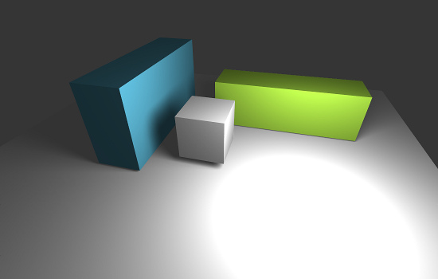
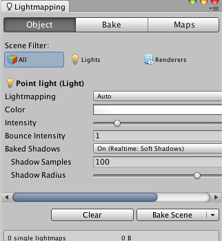

Lightmapping Quickstart
This an introductory description of lightmapping in Unity. For more advanced topics see in-depth description of lightmapping in Unity
Unity has a built-in lightmapper: it's Beast by Illuminate Labs. Lightmapping is fully integrated in Unity. This means that Beast will bake lightmaps for your scene based on how your scene is set up within Unity, taking into account meshes, materials, textures and lights. It also means that lightmapping is now an integral part of the rendering engine - once your lightmaps are created you don't need to do anything else, they will be automatically picked up by the objects.

Preparing the scene and baking the lightmaps
Selecting – from the menu will open the Lightmapping window:
- Make sure any mesh you want to be lightmapped has proper UVs for lightmapping. The easiest way is to choose the option in mesh import settings.
- In the pane mark any Mesh Renderer, Skinned Mesh Renderer or Terrain as – this will tell Unity, that those objects won't move nor change and they can be lightmapped.

- To control the resolution of the lightmaps, go to the pane and adjust the value. (To have a better understanding on how you spend your lightmap texels, look at the small window within the and select ).

- Press
- A progress bar appears in Unity Editor's status bar, in the bottom right corner.
- When baking is done, you can see all the baked lightmaps at the bottom of the Lightmap Editor window.
Scene and game views will update - your scene is now lightmapped!
Tweaking Bake Settings
Final look of your scene depends a lot on your lighting setup and bake settings. Let's take a look at an example of some basic settings that can improve lighting quality.
This is a basic scene with a couple of cubes and one point light in the centre. The light is casting hard shadows and the effect is quite dull and artificial.
Selecting the light and opening the pane of the window exposes Shadow Radius and Shadow Samples properties. Setting Shadow Radius to 1.2, Shadow Samples to 100 and re-baking produces soft shadows with wide penumbra - our image already looks much better.
 
With Unity Pro we can take the scene one step further by enabling Global Illumination and adding a Sky Light. In the pane we set the number of Bounces to 1 and the Sky Light Intensity to 0.5. The result is much softer lighting with subtle diffuse interreflection effects (color bleeding from the green and blue cubes) - much nicer and it's still only 3 cubes and a light!


Lightmapping In-Depth
For more information about the various lightmapping-related settings, please refer to the in-depth description of lightmapping in Unity.
Page last updated: 2012-10-30